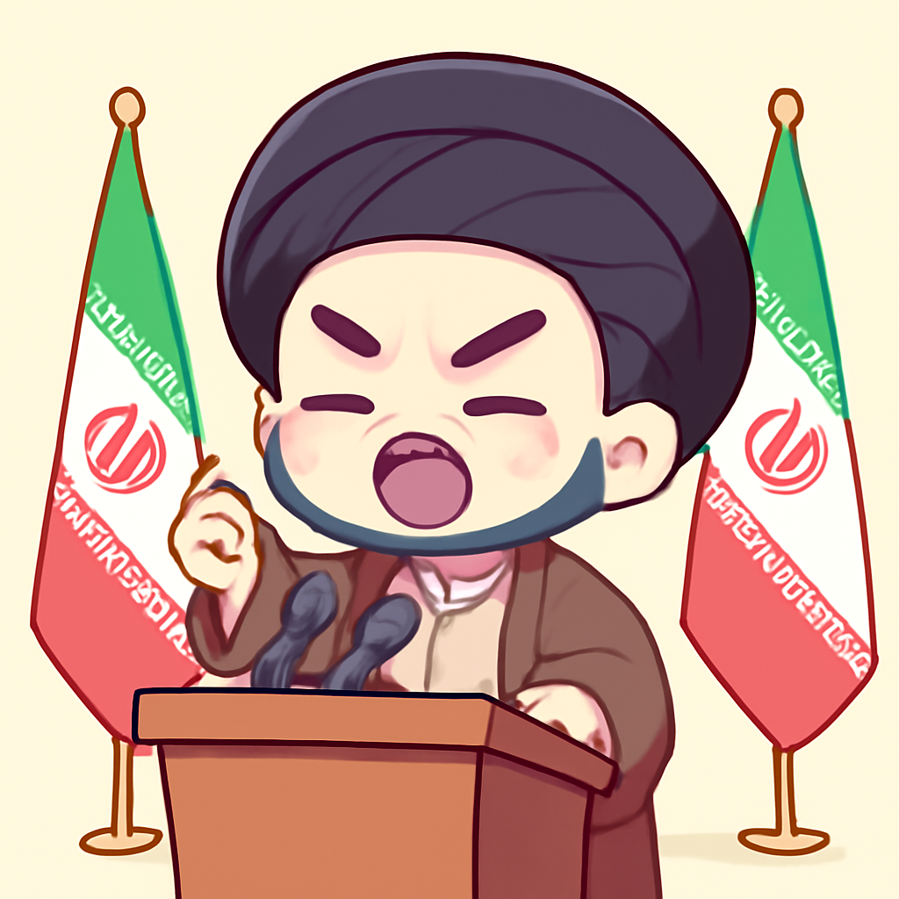
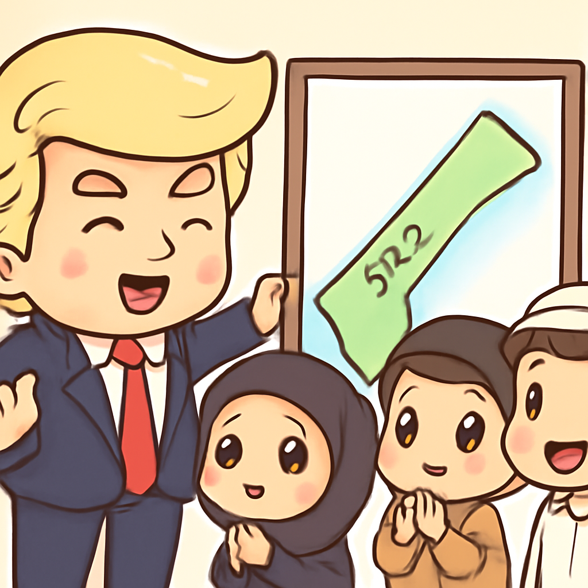
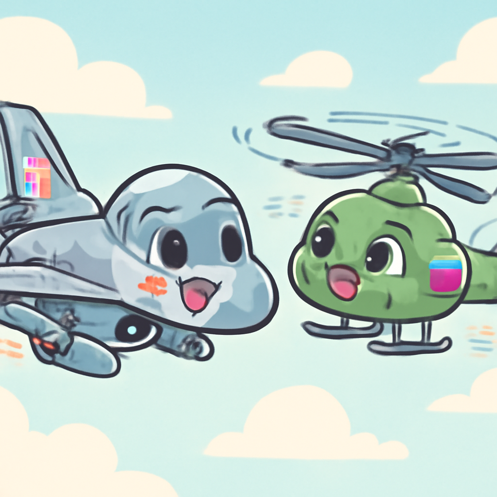

其一 · 美國華府 · 特朗普與習近平會議聚焦 AI 競爭
美中兩國爭奪 AI 領導地位，卻想保持人類控制。
在美國華府，特朗普與中國國家主席習近平召開會議，焦點在於人工智慧的競爭。兩國不僅想要成為 AI 的超級強國，還希望能在這場科技競賽中確保人類的控制權。這場會議對未來的科技政策及國際關係有重要影響，畢竟誰掌握了 AI，誰就掌握了未來！
🔗 原始新聞 ↗
2026-09-24 · 以古觀今，以笑抗愁
美中兩國爭奪 AI 領導地位，卻想保持人類控制。
在美國華府，特朗普與中國國家主席習近平召開會議，焦點在於人工智慧的競爭。兩國不僅想要成為 AI 的超級強國，還希望能在這場科技競賽中確保人類的控制權。這場會議對未來的科技政策及國際關係有重要影響，畢竟誰掌握了 AI，誰就掌握了未來！
🔗 原始新聞 ↗
伊朗總統在聯合國發表演說，拒絕向美國屈服。

在德黑蘭，伊朗總統在聯合國大會上對特朗普的威脅做出反擊，強調伊朗絕不會“屈膝”。這一言論不僅是對美國施壓的回應，也顯示出中東局勢的嚴峻，隨著國際緊張局勢加劇，未來的和平似乎更加遙不可及。希望這場口水戰不會轉變為實際衝突！
🔗 原始新聞 ↗
烏克蘭總統敦促國際社會關注戰爭的擴大影響。
在基輔，烏克蘭總統澤倫斯基在聯合國發表講話，警告俄烏戰爭的影響已超出國界，導致全球油價上漲和武器技術升級。他呼籲國際社會行動起來，以防止冬季的困境加劇。看來這場戰爭不僅影響了家園，還影響了整個地球的運轉！
🔗 原始新聞 ↗
特朗普在聯合國會議上提出 24.5 億美元的重建計畫。

在特拉維夫，特朗普的和平委員會宣布了一項高達 24.5 億美元的加沙重建計畫，這個消息是在聯合國大會期間傳出的。這項計畫的成功與否將影響以色列與巴勒斯坦的未來關係，大家都在期待看到這筆錢能否真的轉化為和平的泡沫，而不是又一場爭議的開始！
🔗 原始新聞 ↗
波蘭稱俄軍直升機在空域逗留 42 秒，戰鬥機緊急升空攔截。

在華沙，波蘭政府指控一架俄軍直升機侵犯其空域，並且在空中逗留了 42 秒，令波蘭戰鬥機緊急升空進行攔截。這一事件再次加劇了東歐的緊張局勢，讓人不禁想問，這到底是故意挑釁還是無意間的“空中漫遊”？
🔗 原始新聞 ↗